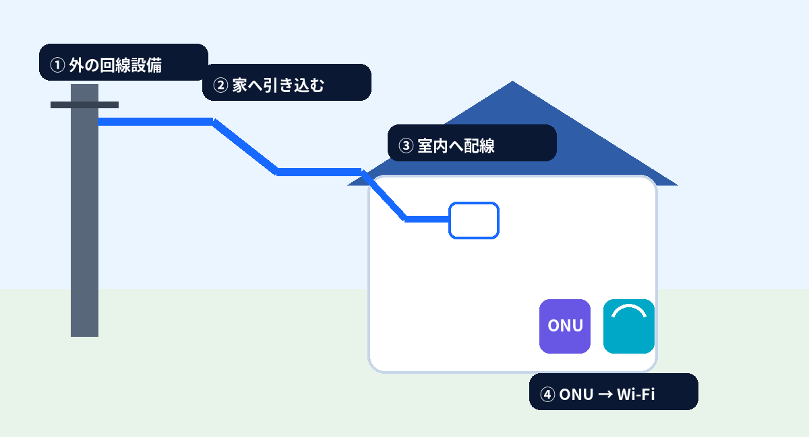
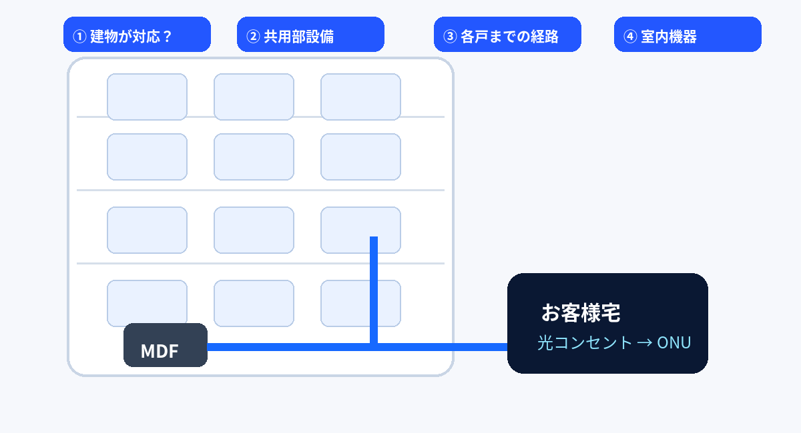
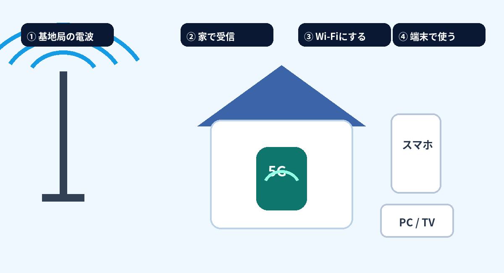
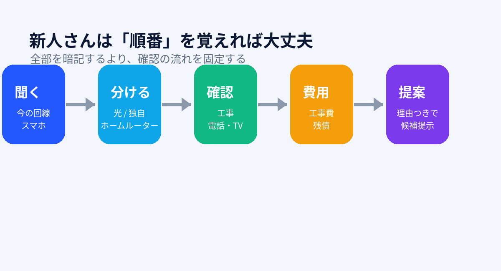
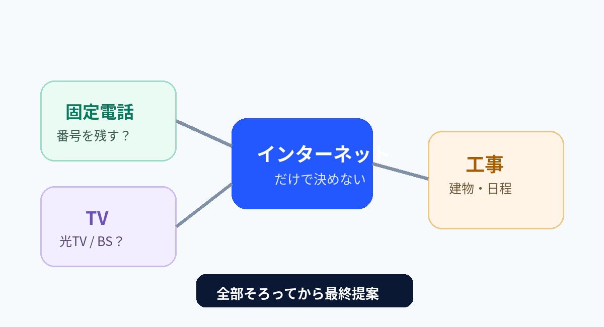
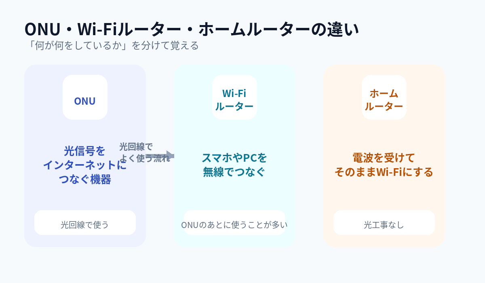
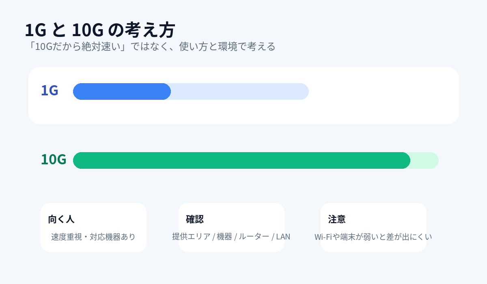

新人さん向け 接客ナビ
光回線、
順番どおりなら難しくない。
「何を聞けばいい？」から「何を提案する？」まで、売場でそのまま使える流れにしました。
新人さんはこの4つだけ
まず「接客 → 工事 → 乗り換え → 比較」
全部のメニューを一度に覚えなくてOK。接客中はこの4つから入れば迷いにくい。
30秒で考える
お客様を4タイプに分ける
まず絵で
よく使う図解 3枚
新人さんはまずここだけ
最初の5項目を聞けば、提案の8割が見える
1今の回線→
2スマホ→
3戸建/集合→
4電話・TV→
5重視点
新人さんはここから
迷ったら「3つ」だけ
① 今の回線 ② スマホ会社 ③ 工事できるか。まずここまで聞けば候補を大きく絞れます。
図で覚える
回線選びの全体像
お客様何を重視？
→
→
ドコモ光
SoftBank 光
@nifty光
auひかり
NURO光
home 5G
SoftBank Air
学ぶ順番
新人さんロードマップ
→
→
→
→
料金・還元・工事費・受付条件は変更があります。最新の店頭資料を最終確認して案内してください。
光回線 独自回線 ホームルーター
スマホから候補を出す
docomoドコモ光 / home 5G
SoftBankSoftBank 光 / Air
au / UQauひかりも候補
その他@nifty光を含め比較
※スマホ会社だけで決めず、提供エリア・建物・電話・TV・工事可否まで確認。
サービスの大きな分け方
光コラボ系ドコモ光 / @nifty光 / SoftBank 光
独自回線系auひかり / NURO光
ホームルーターhome 5G / SoftBank Air
新人さん向け覚え方
工事OK光回線を中心に比較
工事NGhome 5G / SoftBank Air
速度重視10G・独自回線も確認
電話・TVあり先に引継ぎ条件を確認
3秒で区別
「今どこ？」だけ見ればOK
今：回線なし / 別系統→新規新しく回線を作る
今：フレッツ光→転用光コラボへ移る
今：光コラボ→事業者変更別の光コラボへ
ただし：1G/10G・電話・TVで手続きが変わることがある → 最後は資料確認
NTTフレッツ光
転用→
光コラボドコモ光 / @nifty光
SoftBank 光 など
光コラボ A現在の回線
事業者変更→
光コラボ B乗り換え先
回線なし / 独自回線など新しく契約
新規→
新しい回線工事・開通へ
判断フロー
今の回線は？
↓
フレッツ光→ 転用の可能性
光コラボ→ 事業者変更の可能性
その他 / なし→ 新規の可能性
ここで断定しない！
1G / 10G、電話、TV、現在の契約種別で手続きが変わる場合があります。資料で組み合わせを確認。
新人さんが一番イメージしづらい所
光回線の工事マスター
まずここだけ
工事は3つに分ければ簡単
1

戸建外 → 家 → ONU → Wi‑Fi2

集合住宅建物設備 → 共用部 → 部屋3

工事したくないホームルーターを比較
覚え方：戸建＝「家へ引く」集合＝「建物設備を見る」工事NG＝「電波で使う」
まず絵で見る
工事のイメージ
まず全体像
光回線は「外 → 建物 → 部屋 → ONU → Wi‑Fi」の順
工事の説明は、細かい料金より先に「どこまで線が来ているか」を考えると分かりやすい。
電柱・回線設備光
→
建物引込
→
室内光コンセント
→
ONU光→通信
→
ルーターWi‑Fi
🏠
戸建の新規工事
- 外から建物へ 光ファイバーを引き込む
- 宅内へ 配管や既存の穴などを使って配線
- 室内 光コンセント・ONUなどを設置
- 開通確認 通信できることを確認
建物状況によって穴あけ・配線方法などが変わるため、店頭で施工方法を断定しない。
🏢
集合住宅の新規工事
- 建物が対応しているかを確認
- 共用部から部屋までの設備状況を確認
- 光配線方式など、建物設備に応じて開通
- 管理会社・オーナー確認が必要になる場合もある
「マンションだから必ず簡単工事」とは限らない。住所・部屋番号で提供状況を確認。
工事がどうなる？ 4パターンで覚える
①新規工事回線設備を新しく引く。訪問工事になることがある。
②既存設備を利用以前の光設備が使える場合は、工事内容が軽くなることがある。
③無派遣 / 工事なし設備状況によって訪問なしで切替できる場合がある。
④ホームルーター光回線工事は不要。電波・登録住所・端末条件を確認。
当日の流れ
1作業員訪問工事内容確認
→
2引込・配線建物状況に合わせる
→
3ONU設置光信号を通信へ
→
4開通確認通信確認
→
5Wi‑Fi設定ルーター接続
ONU・ルーター・ホームルーターの違い
光
ONU
光ファイバーの信号を、家庭内で使える通信に変換する機器。
)))
Wi‑Fiルーター
ONUなどにつないで、スマホやPCへ有線・無線で分配する。
5G
ホームルーター
モバイル回線を利用。光ファイバーを家へ引く工事は不要。
電話・TVがあると確認が増える
インターネット
＋
固定電話番号を残す？
発番元は？
＋
テレビ光TV？
地デジ/BS？
＝
工事内容・手続き確認ネットだけで決めない
1G → 10Gで新人さんが注意するところ
1G現在
→
確認提供エリア
機器
工事
→
10G変更後
「同じ会社の1G→10Gだから、必ず品目変更だけ」とは限らない。店頭資料で手続き方法と工事要否を確認。
工事費の考え方
基本工事費新規 / 切替 / 品目変更などで考える
＋
追加費用の可能性土日祝 / 電話 / TV / 追加工事など
＝
最終確認最新資料で金額確認
※固定の金額は変更しやすいため、BBマスターでは「どんな項目で増減するか」を理解する構成にしています。
集合住宅の方式イメージ
光配線方式
共用部 → 光配線 → 各戸
部屋まで光でつながる方式。対応状況を確認。
VDSL など
共用部 → 既存配線 → 各戸
建物設備に合わせた方式。住居設備次第で条件が変わる。
LAN方式など
共用部 → LAN設備 → 各戸
建物設備が整っているケース。住所確認が大切。
宅内機器のつながり
光コンセント
→
ONU
→
Wi‑Fiルーター
→
スマホ・PC・TV
「Wi‑Fiが欲しい」= ONUだけでは足りないことが多い。ルーターの役割も一緒に説明すると分かりやすい。
工事説明で新人さんが言いやすい言葉
戸建「外からお家に回線を引き込んで、お部屋の機器につなぐ流れです」
集合「建物設備の状況を確認しながら、お部屋までつなげる形になります」
工事なし「設備状況によっては訪問工事なしで切替できる場合があります」
電話・TVあり「ネットだけでなく、電話やテレビの工事・手続きも一緒に確認します」
戸建と集合住宅の違いを一言で
🏠
戸建
建物へ引き込むイメージ。外から家へ回線を入れる流れを想像すると分かりやすい。
🏢
集合住宅
まず建物設備を確認するイメージ。共用部からお客様宅までの設備状況がポイント。
よくある工事質問
Q. すぐ使える？A. 工事内容や日程によります。工事不要のケースもあります。
Q. 工事って何するの？A. 回線をつないで、ONUや宅内側の接続を確認します。
Q. マンションでも大丈夫？A. 住所と建物設備の確認が大切です。
Q. Wi‑Fiも使える？A. ONUのほか、Wi‑Fiルーターなど宅内機器も確認します。
工事費は回線・プラン・建物・工事内容で変わります。
BBマスターでは工事の仕組みを理解し、最終金額は最新の店頭資料で確認する使い方にしています。
光回線 と ホームルーター
光回線
- 家に回線を引き込む
- 工事が必要になることがある
- 固定回線として使う
- 電話・TVも絡みやすい
電波
)))
HOME
5G / Air
📱 💻 📺
ホームルーター
- 光回線工事は不要
- 登録住所・電波確認が大切
- すぐ使いたい人に向く
- 固定回線と特徴が違う
新規・転用・事業者変更の違い
新規
今の回線なし / 別系統→新しく契約
最初から新しく入るイメージ。工事や開通日を確認。
転用
フレッツ光→光コラボ
フレッツ光から光コラボへ。1G / 10G や電話・TVも確認。
事業者変更
光コラボ A→光コラボ B
光コラボ同士の乗り換え。現在回線名を必ず確認。
番号を残したい時の考え方
固定電話を使ってる？
↓
はい
番号を残す？ 発番元は？
いいえ
ネット中心で進めやすい
↓
番号引継ぎ可否・工事・オプションを確認
テレビがあると確認すること
地デジだけ基本の視聴方法を確認
BSも見る必要な視聴条件を確認
光TV利用回線変更で工事や手続きが変わる場合あり
速度は何で変わる？
速度
回線プラン
宅内機器
Wi‑Fi環境
端末性能
「10Gだから絶対速い」ではなく、回線・機器・Wi‑Fi・端末をまとめて考える。
スマホ会社から候補を出す図
docomoドコモ光 / home 5G
SoftBankSoftBank 光 / Air
au・UQauひかりも候補
その他@nifty光含め比較
新人さんは、この順番で見ればOK
① 向いている人→② 何を聞く→③ 工事→④ 電話・TV→⑤ 注意
見る順番はこれだけ
① 工事できる？→
② スマホ会社→
③ 電話・TV→
④ 速度重視？→
⑤ 手続き確認
まず大きく3種類
光コラボ系ドコモ光
SoftBank 光
@nifty光フレッツ系設備を使う
独自回線系auひかり
NURO光エリア・工事条件を個別確認
ホームルーターhome 5G
SoftBank Air光回線工事なし
比較早見表
※「可能性あり」「確認」は、現在回線・プラン・建物・電話/TV利用状況で変わるため、最終的に最新資料で確認。
工事だけで見ると
工事できる
ドコモ光SoftBank 光@nifty光auひかりNURO光
工事したくない
home 5GSoftBank Air
電話・TVありのお客様
☎固定電話あり番号を残す？ 発番元は？
▣TVあり光TV？ 地デジ？ BS？
⚠両方ありネットより先に引継ぎ条件も確認
この早見表は「候補を絞るため」のもの。
最終案内では、提供エリア・建物・1G/10G・工事・電話・TV・料金・キャンペーン・受付条件を最新資料で確認してください。
提供資料 2026-05版を反映
工事費・費用マスター
新人さん向け
金額は「ネット → 電話 → TV」の順で見る
最初から全部足そうとすると混乱するので、まずネット工事、そのあと電話・TVの有無を追加で確認。
ネット基本工事
＋
電話使う場合
＋
TV使う場合
＝
総額最新資料で確認
新規：ネット工事費
@nifty光
事務手数料3,300円
派遣工事22,000円
無派遣工事：3,300円
ドコモ光
事務手数料4,950円
派遣工事28,600円
無派遣工事：3,300円
SoftBank 光
事務手数料4,950円
派遣工事47,520円
無派遣工事：5,280円
※別途追加工事が発生する場合あり。建物・工事内容・申込条件で変わるため、最終確認は最新資料。
電話工事の見方
固定電話あり？
→
どのパターン？新規発番 / 他社から / アナログから
→
料金確認回線・1G/10Gで確認
@nifty光
新規発番1,100円〜2,750円
他社コラボ等3,300円〜4,950円
アナログから6,600円〜8,250円
ドコモ光
新規発番1G 1,100円 / 10G 2,750円
他社コラボ等1G 3,300円 / 10G 4,950円
アナログから1G 6,600円 / 10G 8,250円
SoftBank 光
新規発番1,100円
他社コラボ等3,300円
アナログから6,600円
※電話の発番元・番号引継ぎ条件で扱いが変わるため、料金だけで判断しない。
TV工事費の目安
@nifty光29,810円〜ネット＋TV / 派遣工事
ドコモ光26,180円〜ネット＋TV / 派遣工事
SoftBank 光32,780円〜ネット＋TV / 派遣工事
事業者変更で工事が必要になる？
今と同じ品目？例：1G → 1G
→
同じ工事なしになるケースあり
違う1G↔10Gなどは工事・品目変更を確認
→
最新一覧で確認電話・TVも忘れずに
新人さん向け 金額説明の順番
1基本工事まずネットだけ
→
2電話使うなら追加確認
→
3TV使うなら追加確認
→
4追加工事建物・日程など
→
5最終金額最新資料
このページの数字は、送ってもらった「2026-05 各種工事費一覧」資料をもとに作成。
料金・キャンペーン・工事条件は変更されるため、接客時は最新資料を優先してください。
新人さん向け
「月額が安い」だけで乗り換えを決めない
乗り換え時は、解約金だけでなく 端末残債・工事費残債・撤去費・オプション まで確認。
解約時に確認する5項目
1解約金契約解除料
2端末残債ホームルーター等
3工事費残債分割残り
4撤去費回線により確認
5オプション電話・TV等
ホームルーターで特に注意
5G
ドコモ home 5G
- 光回線工事は不要
- 端末代・残債を確認
- 登録住所・利用場所を確認
- 解約時も端末残債に注意
Air
SoftBank Air
- 光回線工事は不要
- 端末購入 / レンタル条件を確認
- 電波状況を確認
- 解約時の端末残債に注意
ホームルーターは「工事がない＝解約時の負担もない」ではありません。端末代の残りを必ず確認。
キャンペーンは3種類に分けると簡単
①即時還元その場で家電値引きなど
②後日還元開通後・条件達成後
③乗り換え支援解約金等サポート
※対象商品・申込条件・受取時期・オプション条件は変わるため、最新資料を優先。
新人さん向け 接客フロー
1今の回線何を使ってる？
→
2解約負担残債まで確認
→
3新回線特典条件・時期確認
→
4実質負担比較する
→
5提案理由を説明
よくある失敗
× 解約金だけ見る端末残債・工事費残債を見落とす
× 還元額だけ伝える受取時期・申請・条件を伝えない
× 工事不要だから安心と説明ホームルーターの端末残債を見落とす
× その場で総額を断定最新資料を確認せず案内してしまう
解約金・端末代・キャンペーンは変更が多い項目です。
BBマスターでは「確認漏れを防ぐ」ことを優先し、金額は接客時の最新資料を最終確認してください。
新人さん向け
請求書は「金額」より先に“中身”を見る
月額だけ見ても、何の回線・何のオプション・何の残債か分からない。まず項目名を整理する。
1回線名
→
2基本料
→
3オプション
→
4残債
→
5電話・TV
請求書の“見る場所”イメージ
インターネットご利用明細今月のご請求
① サービス名○○光 / ○○Air / home 5G など
② 基本料金月額基本料
③ オプション電話 / TV / Wi‑Fi / サポート等
④ 端末・工事費分割代金 / 工事費分割
⑤ 割引セット割 / キャンペーン等
請求合計XXXX円
「高いですね」で終わらない
基本料回線そのもの
＋
オプション電話・TV等
＋
残債端末・工事
−
割引セット割等
＝
実際の請求ここを比較
請求書から乗り換え可否を考える流れ
1今の回線名まず正確に
→
2回線種別フレッツ / コラボ / 独自
→
3電話・TV引継ぎ確認
→
4残債解約負担確認
→
5候補決定新規 / 転用 / 事業者変更
請求書でよくある“見落とし”
× 回線名を見ずに「○○系」と判断正式なサービス名を確認する
× 合計金額だけ比較電話・TV・残債を分けて見る
× 割引後料金だけ比較割引終了後や条件も確認
× 端末代を月額料金と勘違い端末・工事費の分割を切り分ける
そのまま使える一言
請求書を見せてもらった時
「合計金額だけではなく、回線・電話・テレビ・端末代がどう入っているかを一緒に確認しますね」
請求書の表記は会社・契約内容で異なります。
BBマスターでは“見る順番”を覚えるための図解として使い、正式な契約内容は各社の最新情報・契約画面で確認してください。
新人さん向け
上から順番に進めるだけ
接客で何を聞くか迷ったら、このモードを開いて1ステップずつ確認。
聞く→候補→手続き→工事→費用→提案

順番を固定すると迷いにくい聞く → 分ける → 確認 → 費用 → 提案
新人さん向けまず絵を見る → あとで言葉を読む
光回線の工事や機器は、どこからどこへつながるかを絵で見る方が覚えやすい。
01戸建の光回線工事
外の回線設備から家の中まで、一本の流れで考える。
外から引込室内へ配線光コンセントONUWi‑Fi
02集合住宅の工事
マンションは「建物設備 → 共用部 → お客様宅」で考える。
建物対応確認MDF等各戸までの設備室内機器
03ホームルーター
光ファイバーではなく、基地局の電波を家で受ける。
光工事なし電波を受信Wi‑Fi化住所・電波確認
04電話・TV・工事はセットで確認
ネットだけ先に決めると、あとから手続きが増えやすい。

電話番号維持TV視聴方法工事条件最終提案
05接客の流れ
全部を覚えるのではなく、確認する順番を固定する。
絵を見たあとに覚える一言
戸建「外 → 家 → ONU → Wi‑Fi」
集合住宅「建物設備 → 共用部 → 部屋」
ホームルーター「基地局 → 家 → Wi‑Fi」
接客「聞く → 確認 → 費用 → 提案」
難しい言葉より、まず1枚絵で全体をつかむ
「種類」「機器」「工事」「手続き」「請求書」を、文章を読む前に絵で整理。
A回線の種類
光コラボ・独自回線・ホームルーターの違い
光コラボ独自回線ホームルーター

ONUWi‑Fiルーターホームルーター

エリア機器Wi‑Fi端末
新人さん向け説明は「聞く → 共感 → 確認 → 提案」
難しい言葉を先に出さず、お客様の答えに合わせて短く返す。
01
最初の一言
大丈夫です。まず今の回線とスマホ会社だけ確認しますね。
🧑💼
ポイント：いきなり回線名を並べない。
02
工事したくないと言われたら
それなら、まず home 5G や SoftBank Air のような工事不要タイプを比較しましょう。
🧑💼
次に聞く：利用住所・スマホ会社・固定電話の必要性。
03
速度重視と言われたら
速度重視なら 10G や NURO光、auひかりも候補です。まずエリアと機器環境を確認しますね。
🧑💼
NG：「10Gなら絶対10倍速いです」と言い切らない。
04
固定電話を残したいと言われたら
番号を残せるか確認します。今の電話サービスと、どこで発番した番号かも見ますね。
🧑💼
ポイント：番号引継ぎを断定しない。
05
フレッツ光利用中なら
ありがとうございます。光コラボへ変えるなら転用になる可能性があります。1G/10Gと電話・TVも確認しますね。
🧑💼
覚え方：フレッツ → 光コラボ = 転用の可能性。
06
最後のまとめ
ここまで確認できたので、あとは提供エリアと最新条件を見て、一番合う回線を絞りますね。
🧑💼
ここで見る：超早見表 → 工事費 → 乗り換え費用。
これだけは覚える「言い切る」より「確認する」
BB接客は条件で変わることが多い。断定より、確認する順番を覚える。
×
200Vみたいに
“決め打ち”しない
「この回線なら絶対工事なし」など、条件確認なしの断定はNG。
○「設備状況を確認します」
×
10G = 必ず10倍速い
Wi‑Fi、LAN、端末、混雑状況なども影響する。
○「環境も含めて速さが決まります」
×
光コラボなら全部同じ
1G/10G・電話・TVで手続きや工事が変わる場合がある。
○「今のプランを確認します」
×
固定電話は番号そのまま
発番元や利用サービスにより条件が変わる。
○「番号引継ぎ可否を確認します」
×
工事不要 = お金がかからない
ホームルーターは端末代や残債がある場合がある。
○「端末条件と残債も見ます」
×
月額だけ比べる
電話・TV・オプション・残債・割引も分けて見る。
○「請求の中身を分けて比較します」
○ の接客に変える3語
確認します条件によります最新資料を見ます
まず3つだけ
専門用語はあとでOK
最初から全部覚えなくて大丈夫。まずこの3つを聞けば次に見る場所が分かります。
1今ネット使ってる？
2工事できる？
3スマホはどこ？
言葉が出たら
専門用語はこう覚える
気になる言葉を押すと、超かんたん説明が出ます。
一発比較
転用と事業者変更の違い
今の回線フレッツ光
↓
転用
↓
光コラボ
今の回線光コラボA
↓
事業者変更
↓
光コラボB
ここで断定しない
× 必ず工事なし品目変更・設備状況などで工事確認が必要な場合あり
× 電話番号は必ずそのまま番号・発番元・サービス条件を確認
× 旧回線は先に解約切替前に自己判断で解約しないよう案内
× 承諾番号だけ取れば終わり新回線への申込・切替日・電話/TV確認まで必要
承諾番号の取得方法・有効期限・受付条件は事業者や時期で変わる場合があります。
接客時は各社の最新受付資料・申込画面を優先してください。